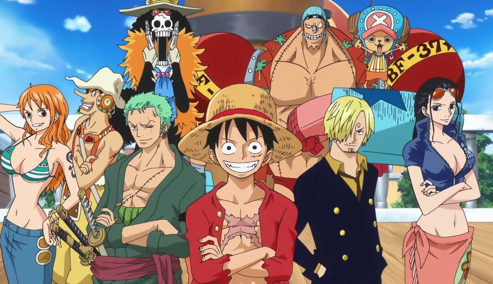

One Piece, Lebih dari Sekadar Anime Bajak Laut
Anime One Piece merupakan salah satu karya anime dan manga paling fenomenal sepanjang sejarah. Dibuat oleh Eiichiro Oda pada tahun 1997, anime ini berhasil menarik perhatian jutaan penonton di seluruh dunia melalui alur yang panjang, karakter yang ikonik, serta dunia fantasi yang sangat luas.
Cerita One Piece berfokus pada seorang anak laki-laki bernama Monkey D. Luffy yang memiliki impian besar untuk menjadi Raja Bajak Laut. Setelah memakan buah iblis Gomu Gomu no Mi, tubuh Luffy menjadi elastis seperti karet, memberikan kemampuan unik yang membantunya dalam petualangan. Bersama awak kapalnya, Straw Hat Pirates, Luffy menjelajahi dunia untuk menemukan harta legendaris bernama One Piece.
Selain unsur petualangan, One Piece juga kaya akan nilai persahabatan, loyalitas, dan mimpi. Setiap anggota kru Topi Jerami memiliki latar belakang tragis namun penuh tekad, seperti Zoro, Sanji, Nami, Usopp, dan Chopper, yang membuat penonton merasa terhubung secara emosional.
Selain itu, dunia One Piece dibangun dengan sangat detail, mencakup ras, pulau, hukum, dan kekuatan unik seperti Devil Fruits serta Haki. Hal ini membuat alur cerita terasa hidup, kompleks, dan penuh kejutan.
Hingga saat ini, One Piece bukan hanya sebuah anime panjang—tetapi sebuah legenda yang mengajarkan bahwa mimpi tidak boleh ditinggalkan, meskipun jalan menuju tujuan penuh rintangan.
"Jika kamu tidak mengambil risiko, kamu tidak bisa menciptakan masa depan."
==> Monkey D. Luffy